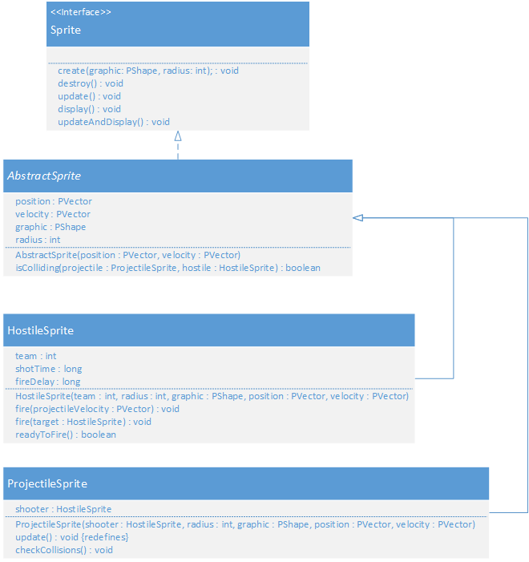

In computer graphics, a sprite (also known by other names; see Synonyms below) is a two-dimensional image or animation that is integrated into a larger scene. Initially including just graphical objects handled separately from the memory bitmap of a video display, this now includes various manners of graphical overlays.
source: Wikipedia
So far we have GameController and ShapeFactory classes. Next we introduce the idea of the Sprite. In a game like Space Invaders, three obvious sprites immediately stand out. There's a player controlled ship, the enemies ships, and the projectiles they fire. While there are many enemies, many projectiles, and one player, all of these can be modeled down to two basic entities: HostileSprite and ProjectileSprite.
The difference between HostileSprite and ProjectileSprite is simply the fact that the ProjectileSprite needs to check for collisions. Let's take a look at this in UML.
Just by looking at this UML class diagram, we are able to write some code.